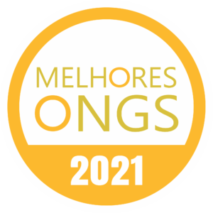
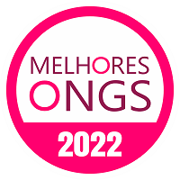

Nossos Valores
É com muito orgulho que comunicamos que a Passatempo Educativo é uma Organização Certificada em Transparência e Boas Práticas Sociais pela Phomenta, membro do Comitê Internacional de Monitoramento de ONGs.
A ICFO é a associação internacional, sediada em Barcelona, que monitora organizações de todo o mundo, creditando aquelas que alcançam padrões internacionais nos seguintes requisitos:
Benefício público
Os padrões exigem que organizações sem fins lucrativos garantam que suas atividades sejam direcionadas ao cumprimento.
Governança
Os padrões exigem que as instituições de caridade tenham responsabilidades ativas e atuem com a independência necessária.
Finanças
Os padrões exigem que instituições de caridade forneçam informações financeiras completas e precisas. As informações financeiras devem fornecer uma visão verdadeira e justa da posição financeira e dos resultados das operações da instituição de caridade.
Eficiência
Os padrões exigem que as instituições de caridade sejam transparentes sobre seus custos de captação de recursos e despesas gerais.
Eficácia
Os padrões exigem que as instituições de caridade avaliem regularmente os resultados de suas atividades (desempenho e / ou eficácia).
Integridade
Os padrões exigem integridade, integridade e integridade, e sua comunicação é verdadeira, precisa e neutra.
Transparência
Os padrões exigem que instituições de caridade disponibilizem informações abrangentes, úteis e válidas sobre seus antecedentes, finanças, atividades e resultados gratuitamente ao público.
“Um certificado como este só comprova a seriedade e comprometimento do trabalho realizado pela Passatempo Educativo, gerando frutos e transformação social. Este reconhecimento internacional permite que os doadores tenham a certeza de que os recursos são utilizados de forma correta”, finalizou Carlos Chinen, lembrando que a manutenção da OSC se dá principalmente através de doações.
Certificações :





 Início
Início